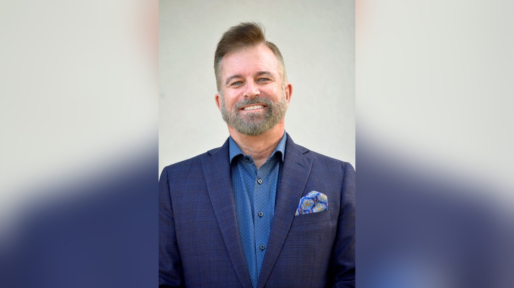

AI is a great toolset. Direction is the foundation.
I’ve been building software companies for 30 years and generating narrative from data long before “AI” was a buzzword. Here’s what I’ve learned about who wins with new technology, and why the answer is almost never about the technology.

A note on my background, because this one matters
I don’t usually lead with résumé. For this post I have to, because the point of the post depends on it.
I’ve founded or led nine companies over the last three decades. Two of them I served as CTO. I started my first business at 14, spent the early 90s at Arthur Andersen managing the tech migration from legacy systems to Microsoft Windows, and by the late 90s I was building software for international trade, then automotive retail (Third Coast Media, later acquired), then a decade running ClickMotive as CTO through its 2012 acquisition by DealerTrack. After that I founded DoctorLogic and ran it as a multi-million-dollar online marketing platform for medical practices through 2025.
Somewhere in the middle of all that, I was writing systems that generated human-readable narrative from structured data: performance summaries, patient explanations, marketing copy. This was long before large language models made it fashionable. We didn’t call it AI. We called it “that thing that saves us from writing 4,000 near-identical reports.”
Today I’m a Professional EOS Implementer®, and I spend my weeks in conference rooms with leadership teams who are trying to figure out what to do about AI. My answer is going to sound unglamorous, so I’ll say it plainly.
The pattern I’ve watched for 30 years
Every 10 to 15 years a technology arrives that gets called “transformational.” The web. Mobile. Cloud. Social. Now AI. In every wave the same thing happens. The companies with a clear vision, healthy culture, and the right people in the right seats absorb the new toolset and pull ahead. The companies without those things buy the same tools, deploy them with more urgency, and end up worse off than before.
That isn’t a tech-vs-culture morality tale. It’s mechanical. A powerful tool amplifies whatever you point it at. If you point it at a clear priority, it moves the needle. If you point it at three conflicting priorities and an unresolved argument between two VPs, it produces those three conflicting priorities faster and louder, at scale, with better formatting.
AI is the most powerful amplifier I’ve seen. Which means it’s the most dangerous one to deploy on top of a weak foundation.
What “foundation” actually means
In EOS® terms, foundation is three specific things. I’ll name them the way we work on them with leadership teams.
- Vision. A shared, written, one-page answer to eight questions: Core Values, Core Focus, 10-Year Target, Marketing Strategy, 3-Year Picture, 1-Year Plan, Quarterly Rocks, and Issues. If your leadership team can’t agree on where the company is going in three years, no AI initiative is going to fix that. It will just get you to the wrong place faster.
- Core Values. Not the plaque on the wall. The three to seven traits you actually hire, fire, review, and reward for. AI will happily generate content, code, or customer responses that violate your values if nobody in the room has clearly named those values and made them non-negotiable.
- Right People, Right Seats. The right people share your Core Values. The right seats fit the GWC test: they Get it, Want it, and have the Capacity to do it. AI changes the shape of a lot of seats. It doesn’t change the test. If someone was in the wrong seat before, giving them Copilot doesn’t make it the right seat. It just changes how they’re wrong.
Three moves I’d make before touching an AI budget
If you’re a business owner sitting on a vendor stack of AI proposals right now, here’s the order I’d work in.
1. Get 100% on the same page about the 3-year picture.
Not the strategy deck. The three-year picture of what the business looks, feels, and measures like. Revenue. Profit. Measurables. What you sell and to whom. Who’s on the leadership team. Every AI decision after that either serves this picture or doesn’t. Most of the AI pitches you’re getting won’t.
2. Score every seat on the People Analyzer®.
Right people (share the Core Values) in the right seats (GWC). Do this before you introduce a tool that will magnify whatever they’re currently doing. If someone can’t articulate their role’s five key responsibilities today, adding AI is going to produce a lot of confidently wrong output and no accountability.
3. Pick one AI use case, own it as a Rock, measure it weekly.
One. Not a portfolio. Assign a single owner. Make it a 90-day SMART priority (Specific, Measurable, Attainable, Relevant, Time-bound). Put it on the weekly Level 10 Meeting® scorecard as on-track or off-track. If it works, roll another Rock next quarter. If it doesn’t, kill it fast and pick the next candidate. This is the same discipline that separates companies that ship from companies that pilot forever.
What I’m not saying
I’m not saying wait on AI. I’m not saying it’s hype. I use AI tools every day, in the same way I used spreadsheets, then databases, then the web, then cloud infrastructure. It’s real, it’s here, and the leverage is substantial.
I am saying the businesses that will get the most out of this wave are the ones that already know who they are, where they’re going, and who’s in the right seat to take them there. Every wave rewards that clarity. This one will reward it more.
The uncomfortable good news
You don’t need to be a tech-forward company to win with AI. You need to be a clear company. Vision. Core Values. Right People, Right Seats. A weekly meeting that surfaces issues and solves them. A quarterly rhythm that keeps priorities honest. That’s the foundation. The tools sit on top.
I’ve built the tools. I’ve sold companies that built the tools. And I’ve now spent 18 months watching leadership teams try to bolt those tools onto shaky ground. The ones with strong foundations are pulling away. The ones without are burning cycles.
If you want the tools to work, get the foundation right first. That’s what I help leadership teams do.
Ready to give your leadership team the foundation to make the leap?
The 90 Minute Meeting is a free, no-obligation conversation. I’ll walk your leadership team through the EOS® tools, share what I’ve seen work (and not work) across nine companies and three decades, and answer your questions about what a strong foundation looks like for a business preparing to make the AI leap.